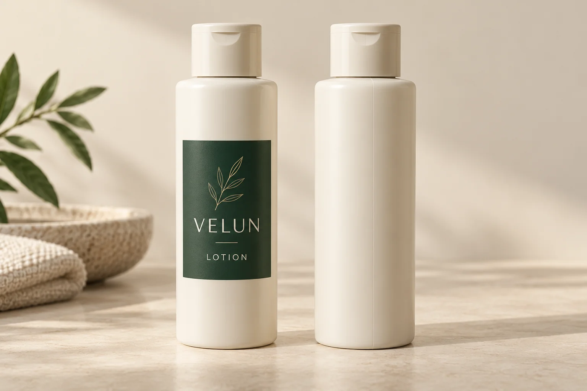
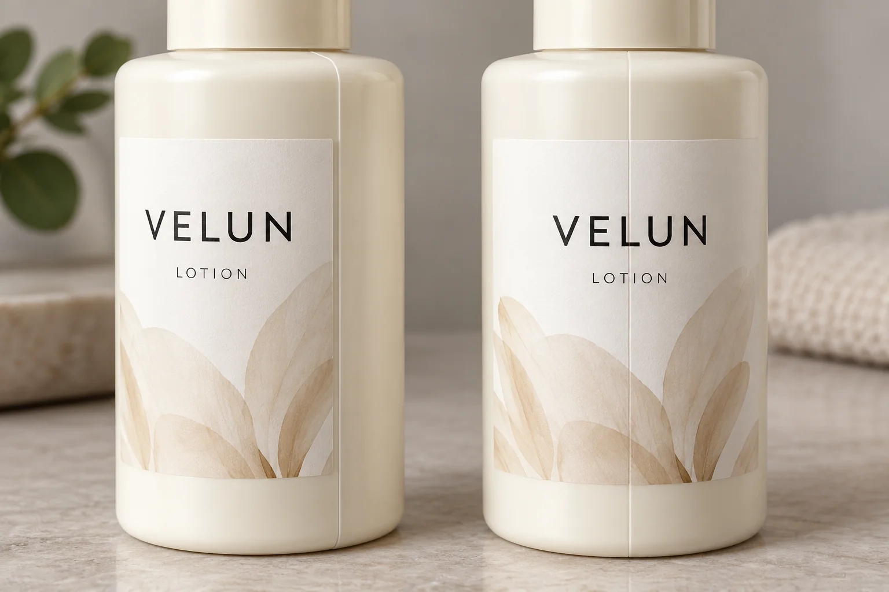

A cosmetic bottle can have a vertical mould seam even when the label artwork is perfectly rectangular. The question is not simply whether the seam is visible. The packaging buyer needs to know where the seam will sit in relation to the label, whether the applicator can control bottle orientation, and whether the finished label can be approved on the actual container.
Start by identifying the seam on representative bottles and marking the intended front. Compare a layout that stays clear of the feature with one that must cross it. Neither a clean artwork proof nor a single hand-applied sample establishes how every bottle will run on a filling line. Keep the placement decision open until the bottle, label construction and application method have been reviewed together.

First identify the bottle feature
A mould seam is a feature of the container. A label overlap seam is where one end of a wrap meets or covers the other. They are different interfaces and may appear at different positions. If the label closes over itself, also review the label overlap decision: the adhesive may contact the label face rather than the bottle.
Ask the bottle supplier for the exact container reference and drawing, then inspect a representative physical bottle. Note all visible seams, raised marks, recessed panels, shoulders and other features within the intended label area. Photograph the bottle from the front, back and sides. A line that is obvious under one light may be hard to see under another; a photograph helps the team discuss the feature, but it does not measure its height or establish label performance.
Identify the cap or pump and the intended product-facing direction. If the design has a front and back, mark those positions on the sample. A mould line can be used as an alignment reference for hand application, as described in Avery's application guidance. Whether a production machine can locate and hold that orientation is a separate question for the operator.
Compare placement options before approving the artwork
| Option | When to consider it | What remains to check |
|---|---|---|
| Place the label within a panel clear of the seam | The available panel leaves enough room for the intended copy and artwork. | Actual-size fit, tolerances, and whether the applicator can maintain the position. |
| Position the seam away from key artwork | A wrap reaches most of the bottle but the appearance is sensitive around the brand name or barcode. | Orientation control and the actual range of seam positions on representative containers. |
| Cross the seam deliberately | The required layout cannot avoid the feature, or the design allows the line to remain visible. | Appearance and contact on the proposed construction; converter and application-team review. |

There is no universal rule that every label must avoid every seam. The feature's shape, label construction, artwork and application process all matter. Conversely, a line that looks harmless on a blank bottle is not a reason to approve a wrap without a representative check. Where the exact feature or the line's orientation is unknown, record that uncertainty instead of specifying an arbitrary clearance.
Run a practical placement review
- Gather inputs. Use the bottle reference and revision, representative bottles, the actual-size artwork or a paper outline, planned label dimensions, and the intended front position. Identify the applicator or hand-application process.
- Mark the surface. On each bottle mark the seam, the intended front centre and the top and bottom of the label panel. Record the cap position if it determines presentation. Photograph the marks before covering them.
- Place alternatives. Fit the paper outline without stretching it. Compare the desired front position with a placement that leaves the feature clear and, if needed, one crossing it. Record which elements lie near the line and whether required copy remains legible.
- Ask about production control. Show the marked bottle to the application team. Ask how the bottle is oriented, what variation is expected, and whether the proposed position can be held. Do not assume that a feature used by a person as a visual reference is automatically detected by a machine.
- Review the finished construction. Arrange the representative label and conditions with the converter and applicator. Observe appearance and contact on the actual bottle at stages agreed by those parties. Record the construction, application method, sample identity and unresolved observations.
If the paper fit misses required copy, change the layout before commissioning a final dieline. If the placement works by hand but the operator cannot orient the bottle reliably, investigate a different panel, container or placement method. If the seam must be crossed and its effect is unresolved, stop the affected release until the parties review an appropriate finished sample. A sample supports a decision only for the materials and conditions it actually represents.
Use a handoff record
| Record | What to include | Decision supported |
|---|---|---|
| Container | Supplier, bottle reference and revision; representative marked samples | Everyone reviews the same physical pack |
| Feature and artwork | Seam position, label panel, front centre, dimensions, artwork revision and photos | Choose a layout and identify critical content near the feature |
| Application | Hand or machine, orientation method, applicator contact and known placement variation | Determine whether the proposed position is repeatable |
| Construction and review | Label material, adhesive, finish, sample identity, conditions and observations | Decide whether evidence represents the intended pack |
| Open items | Unconfirmed seam condition, line trial, artwork changes and decision owner | Hold only the unresolved release until the right party responds |
This record is a planning tool, not a pass/fail specification. Agree acceptance criteria with the appropriate packaging, quality and application teams. If the bottle changes, check whether the previous seam location and application reference still apply rather than assuming the old approval transfers to the new container.
Prepare the label inquiry
For custom cosmetic bottle labels, include the bottle reference, labelled-panel dimensions, artwork version, quantity for each design, intended application method and photographs showing the mould line and desired front. State whether the current layout avoids or crosses the feature and which placement question remains open. Use the quote form to prepare a message; send the photographs and artwork separately by email or WhatsApp.
For a changing bottle profile, first review the separate tapered bottle dieline guide. It addresses the shape and fit of the wrap; this guide focuses on how the container feature relates to the chosen label position.
Technical reference: Avery, How to Apply Your Labels Perfectly, discusses seams as a hand-alignment reference and applying pressure from the centre outward. It does not certify this fictional bottle or a production line.